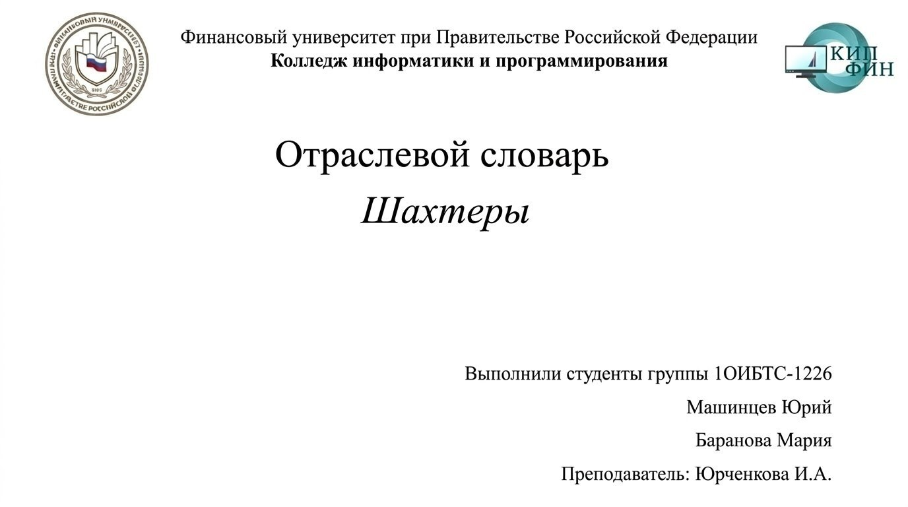
Самый древний и ценный вид каменного угля. Имеет глубокий чёрный цвет с ярким металлическим блеском и содержит до 95% углерода. При горении почти не даёт дыма и пламени, а тепла выделяет больше, чем любой другой уголь. Особенно ценится в металлургии и энергетике.
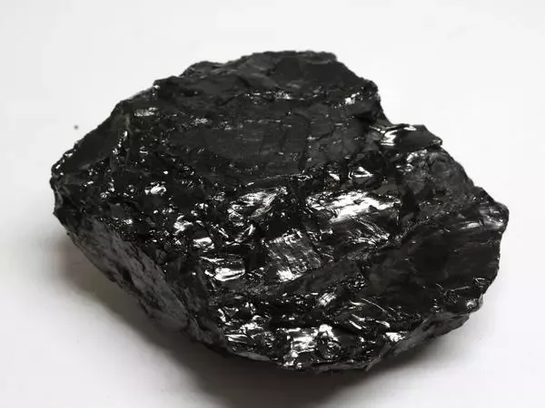
Металлический сосуд (ведро) для подъёма породы, угля или людей из шахты на поверхность. Подвешивается к подъёмному канату и движется по стволу. Используется при проходке вертикальных выработок, когда скиповой подъём ещё не оборудован.
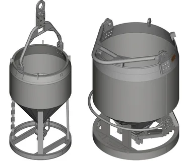
Система подачи свежего воздуха в подземные выработки и удаления вредных газов, пыли и тепла. От её бесперебойной работы напрямую зависит жизнь шахтёров: скопление метана или углекислого газа может привести к взрыву или удушью. Вентиляция — обязательное условие любой подземной добычи.
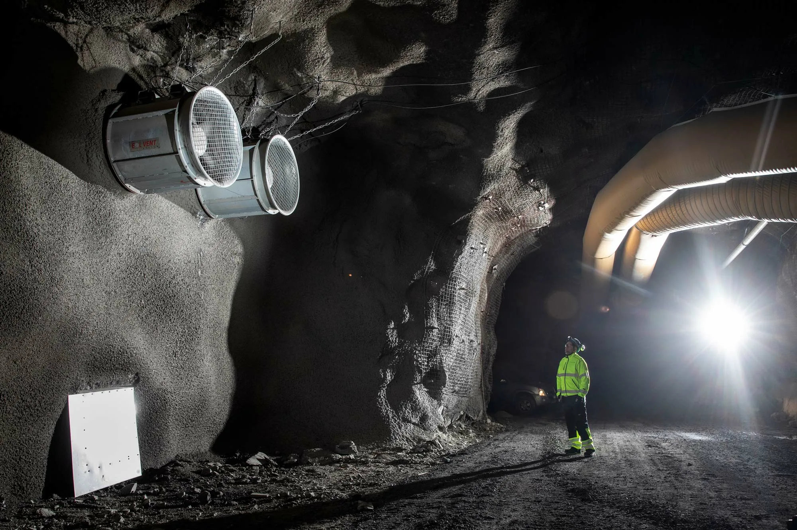
В шахтёрской среде — рудничный газ, прежде всего метан, выделяющийся из угольных пластов. При концентрации от 5 до 15% в воздухе он становится взрывоопасным. Для контроля используются специальные датчики и лампы, а горные работы в опасных зонах ведутся с особыми мерами предосторожности.
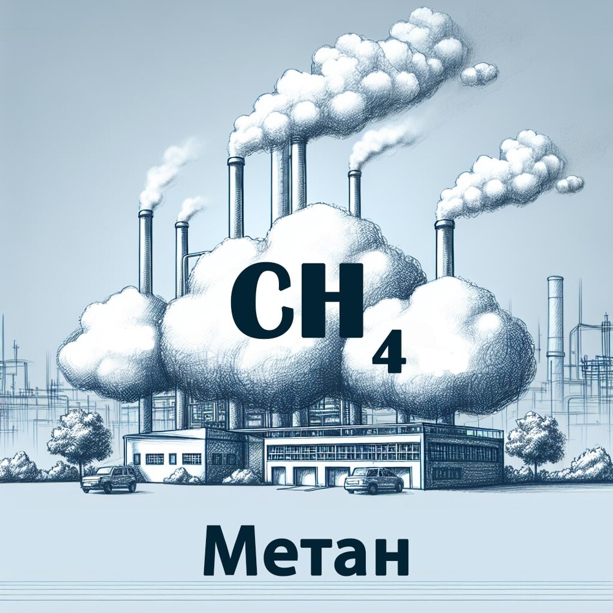
Сменный рабочий инструмент для бурения породы, закрепляемый на конце буровой штанги. Изготавливается из сверхпрочных сплавов или с алмазными вставками. От состояния и типа долота напрямую зависит скорость проходки и стоимость буровых работ.
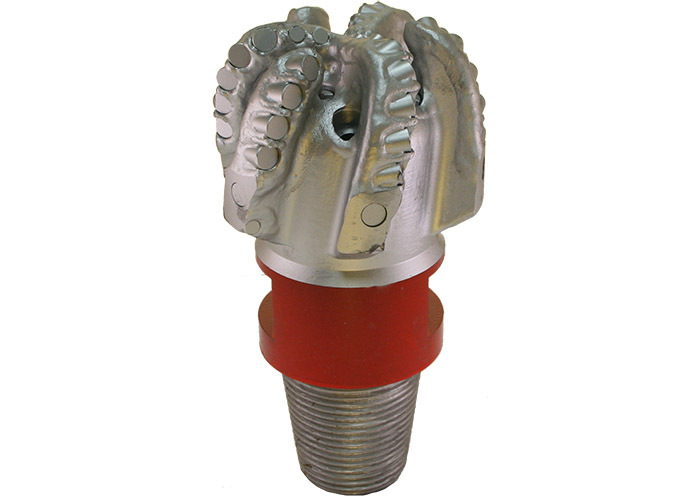
Место в шахте, где непосредственно ведётся добыча угля или породы. Бывает очистным (добычным) и подготовительным (проходческим). Работа в забое — самая тяжёлая и опасная в шахте, именно здесь трудятся проходчики и горнорабочие очистного забоя.
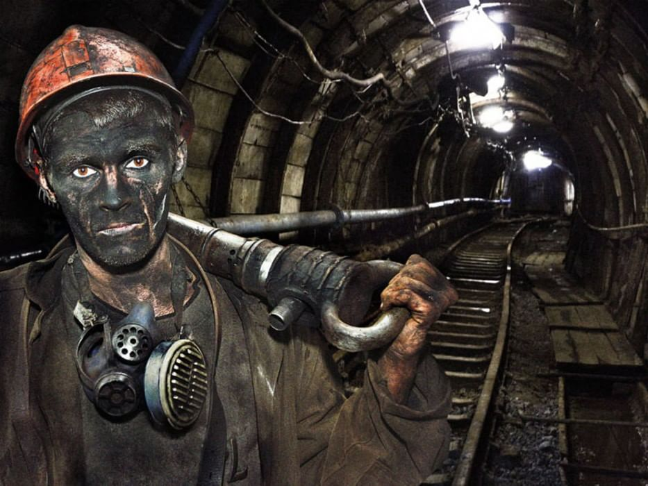
Конструкция (деревянная, металлическая, бетонная), поддерживающая свод горной выработки от обрушения. Бывает временной и постоянной, анкерной и рамной. Надёжность крепи — залог безопасности шахтёров и устойчивости всей подземной системы.
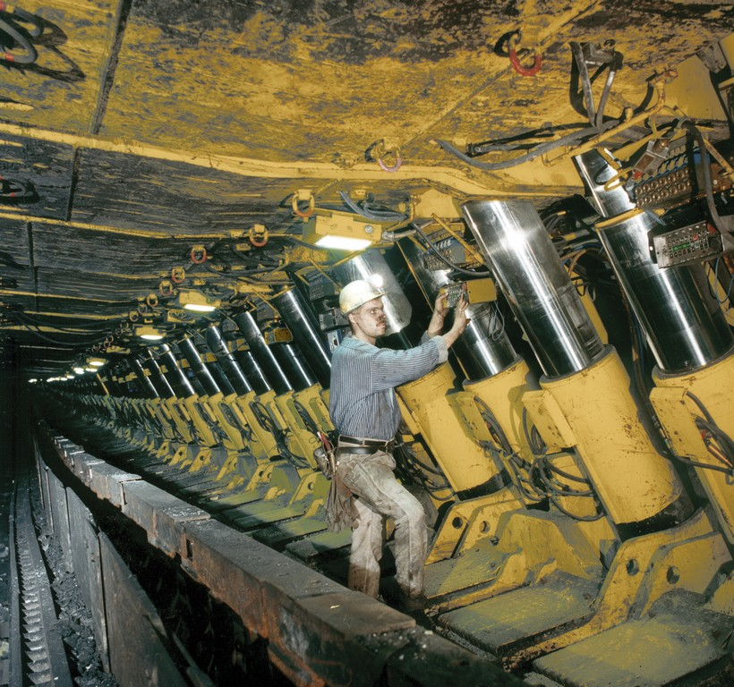
Протяжённый очистной забой большой длины, где уголь добывают сплошным фронтом. Оборудуется механизированной крепью, конвейером и угольным комбайном. Лава — одна из самых производительных форм подземной добычи угля в современной шахте.
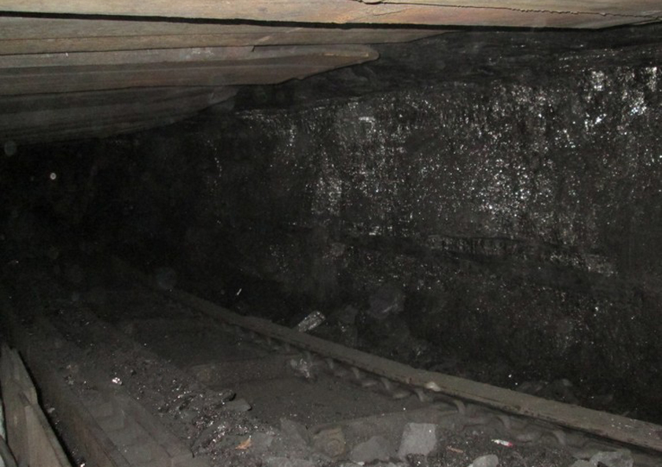
Горный инженер-специалист, ведущий подземные геодезические измерения и съёмку. Определяет положение выработок, следит за их точным направлением и увязкой между собой. От работы маркшейдера зависит, сойдутся ли встречные тоннели в нужной точке.
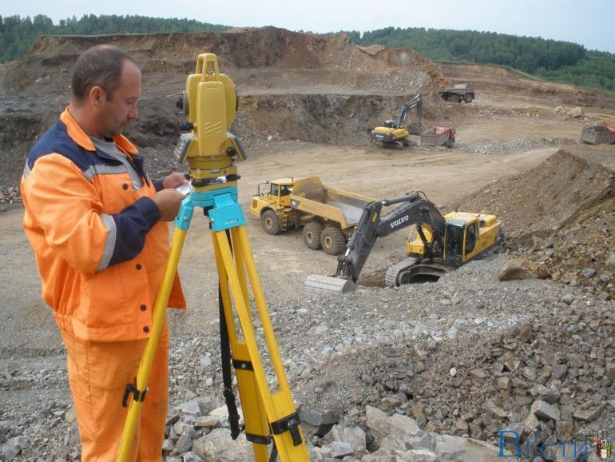
Ручной инструмент шахтёра — острая кирка с короткой ручкой для отбивания угля. Широко использовался до механизации добычи. Сегодня скорее исторический символ шахтёрского труда, который можно увидеть в музеях и на памятниках горнякам.
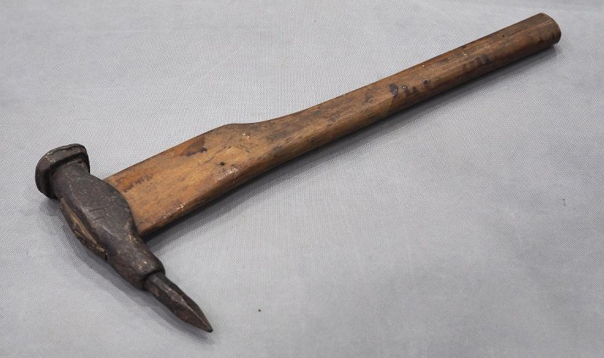
Проведение горной выработки — процесс прокладки тоннеля, ствола или штрека в породе. Может вестись буровзрывным способом или проходческими комбайнами. Проходка — первый этап освоения нового участка, без неё невозможна добыча.
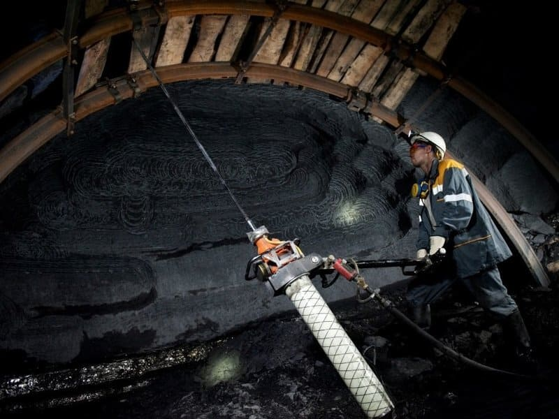
Горное предприятие по добыче полезных ископаемых подземным способом. В отличие от шахты, рудником чаще называют предприятия по добыче руд цветных и чёрных металлов. Включает стволы, подземные горизонты и целый комплекс наземных сооружений.
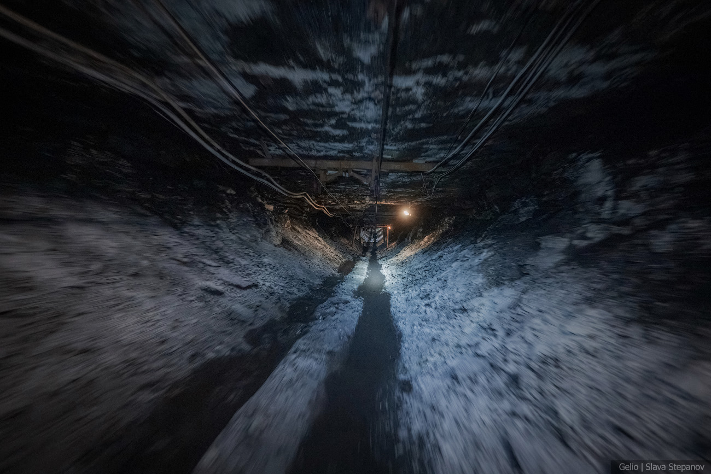
Вертикальная горная выработка, соединяющая поверхность с подземными горизонтами. Бывает главным (для подъёма угля, породы и людей) и вспомогательным (для вентиляции и спуска материалов). Глубина современных стволов достигает 1000–1500 метров.
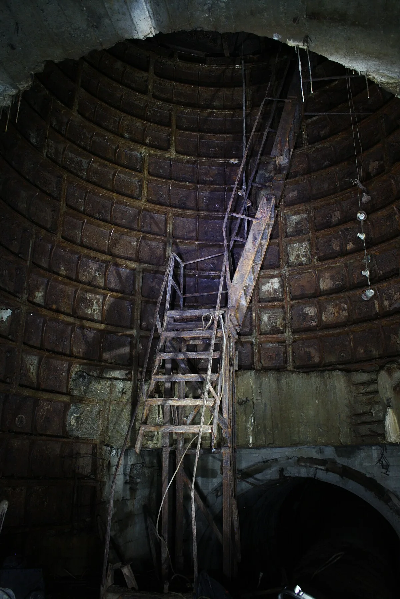
Твёрдое горючее полезное ископаемое растительного происхождения. Образовался из древних растений под давлением и без доступа воздуха миллионы лет назад. Основное богатство шахт, топливо для электростанций и ценное сырьё для химической промышленности.
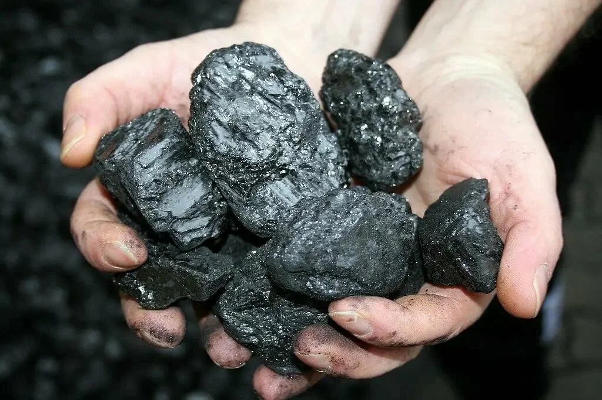
Человек, работающий в шахте и добывающий полезные ископаемые. Профессия требует физической выносливости, знаний техники безопасности и крепкого здоровья. День шахтёра в России и ряде стран СНГ отмечается в последнее воскресенье августа.
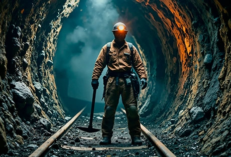